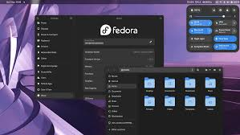

Date: 3/12/2024| Switching to Fedora
# Why i'm switching?
In my previous articles i have said that i use Kubuntu as a daily driver, but i think it's
time to switch to something else, mainly because Kubuntu (A flavour of ubuntu) was kinda forcing me to
use "Snap", a package manager i didn't like ever since i first used it thinking it would be good,
but i prefer flatpaks more, so i got Fedora.
# My Problem with it
Fedora 41 Workstation is the OS I installed but now i've got a Serious problem with it and that is
the desktop environment, Fedora uses GNOME as the desktop environment, which I don't like, i'm more of
a KDE Plasma person and first i thought, oh i could just install the Plasma Desktop through the terminal
and use it because Fedora has KDE Plasma support right? Well I was wrong, "DNF" the package manager for Fedora
didn't have any packages for the KDE Plasma desktop and i have to instead download the Fedora KDE Spin
sudo DNF search plasma-desktop
The command that i used to find Plasma, and got no results
Usually, the package is like this: kde-plasma-desktop
# An Easy solution
I will try to get a different package manager and see if that will help me install Plasma Desktop in Fedora,
but I don't think a different package manager would work, and even if i did install Plasma,
i'm pretty sure Fedora won't let me use it, and that's understandable because they don't want their
KDE Spin to be useless, but i really don't want to install the kde spin set everything up
and I know that fedora has a very quick installer, just go language, partitioning, time zone, and install, but
now i have to wait for 2.8 gigs to download with my network that has a 2 gig / day limit, which is impossible
but i will be installing the KDE Spin anyway.
# My rating of fedora
My overall rating on fedora out of 10 over something like
arch or debian is.. a 10/10, cause it's an advanced distro, that isn't soo complicated like arch.
# Conclusion
Also, if you have any tips or tricks for me, who has never installed fedora before, then please email me:
arkboi.x@gmail.com
So yeah, i'm installing Fedora KDE Spin in the next weekend, but this is it for now, thanks for reading.
-Arkboi

a very low resolution image of Fedora GNOME